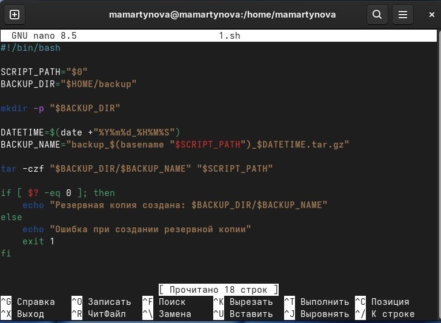
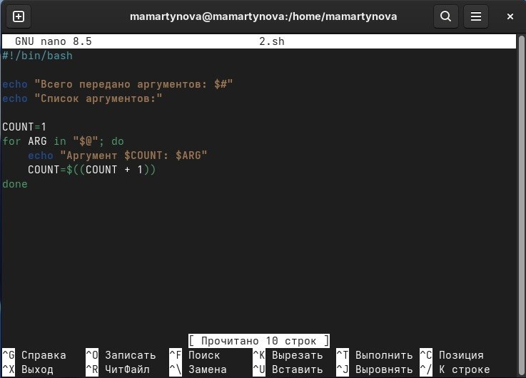
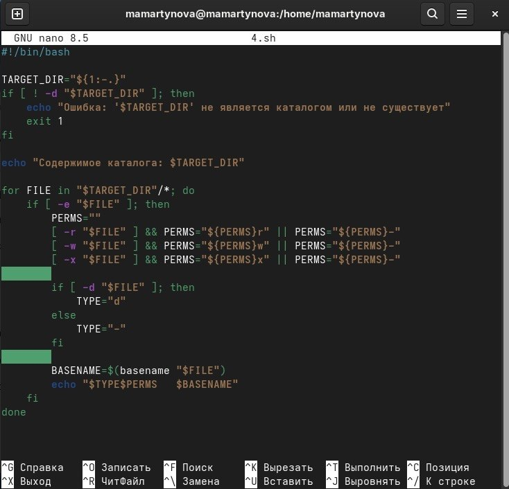
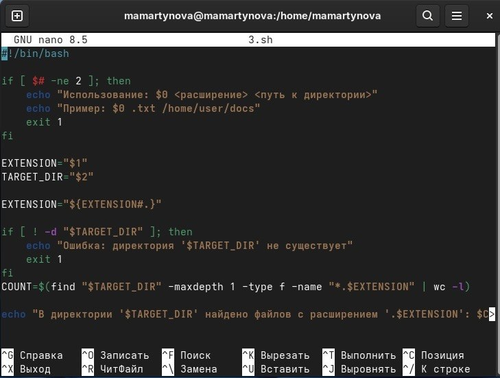
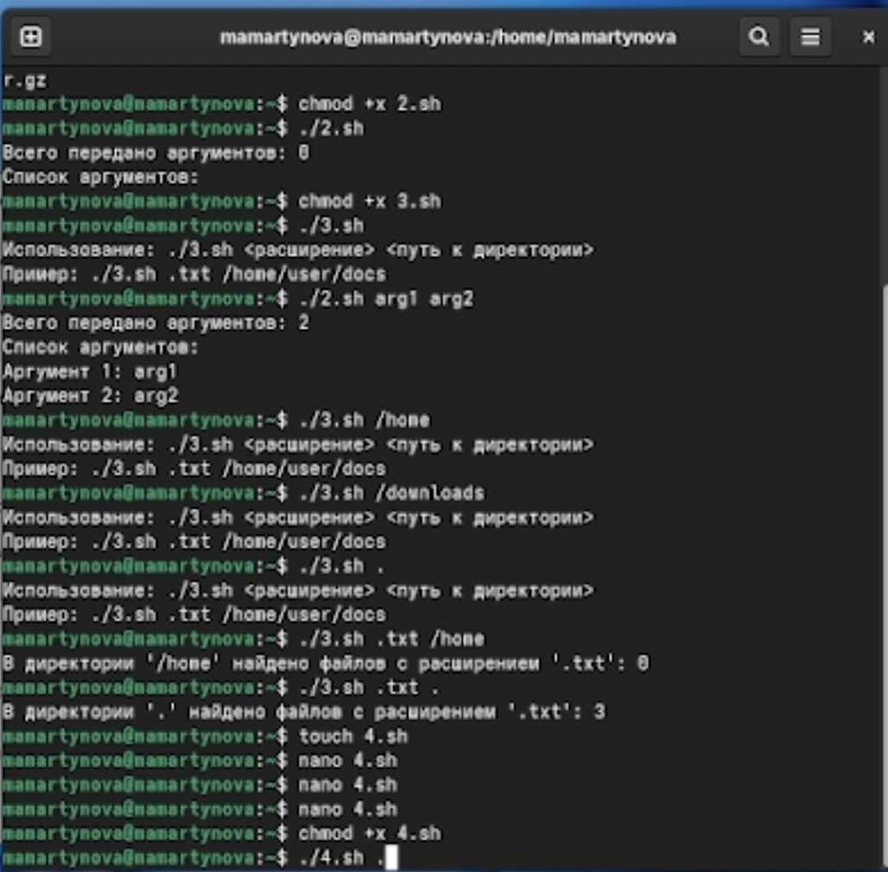

Освоить базовые принципы скриптовой разработки в среде UNIX/Linux и
приобрести навыки создания простых сценариев командной оболочки.
2. Задание
Написать скрипт, который при запуске будет делать резервную копию
самого себя (то есть файла, в котором содержится его исходный код) в
другую директорию backup в вашем домашнем каталоге. При этом файл должен
архивироваться одним из ар- хиваторов на выбор zip, bzip2 или tar.
Способ использования команд архивации необходимо узнать, изучив
справку.
Написать пример командного файла, обрабатывающего любое произвольное
число аргументов командной строки, в том числе превышающее десять.
Например, скрипт может последовательно распечатывать значения всех
переданных аргументов.
Написать командный файл — аналог команды ls (без использования самой
этой ко- манды и команды dir). Требуется, чтобы он выдавал информацию о
нужном каталоге и выводил информацию о возможностях доступа к файлам
этого каталога.
Написать командный файл, который получает в качестве аргумента
командной строки формат файла (.txt, .doc, .jpg, .pdf и т.д.) и
вычисляет количество таких файлов в указанной директории. Путь к
директории также передаётся в виде аргумента ко- мандной строки.
3. Теоретическое введение
Командный интерпретатор (shell) представляет собой программу,
обеспечивающую интерфейс взаимодействия пользователя с операционной
системой. В среде UNIX/Linux распространены следующие разновидности
оболочек: - Bourne shell (sh) — базовая стандартная оболочка с
минимальным, но достаточным набором функций. - C shell (csh) —
расширение sh с синтаксисом, напоминающим язык C, и поддержкой истории
команд. - Korn shell (ksh) — гибрид, где управляющие операторы
аналогичны sh, а остальные возможности близки к csh. - BASH (Bourne
Again Shell) — разработка Free Software Foundation, объединяющая
свойства csh и ksh. Отдельно выделяется стандарт POSIX (разработан
IEEE), определяющий единые интерфейсы для совместимости UNIX-подобных ОС
и переносимости приложений на уровне исходного кода. POSIX-совместимые
оболочки базируются на оболочке Корна.
4. Выполнение лабораторной
работы
Написать скрипт, который при запуске будет делать резервную копию
самого себя (то есть файла, в котором содержится его исходный код) в
другую директорию backup в вашем домашнем каталоге. При этом файл должен
архивироваться одним из ар- хиваторов на выбор zip, bzip2 или tar.
Способ использования команд архивации необходимо узнать, изучив справку.
(рис. 1)

Первый скрипт
Написать пример командного файла, обрабатывающего любое произвольное
число аргументов командной строки, в том числе превышающее десять.
Например, скрипт может последовательно распечатывать значения всех
переданных аргументов.(рис. 2)

Второй скрипт
Написать командный файл — аналог команды ls (без использования самой
этой ко- манды и команды dir). Требуется, чтобы он выдавал информацию о
нужном каталоге и выводил информацию о возможностях доступа к файлам
этого каталога.(рис. 3)

Третий скрипт
Написать командный файл, который получает в качестве аргумента
командной строки формат файла (.txt, .doc, .jpg, .pdf и т.д.) и
вычисляет количество таких файлов в указанной директории. Путь к
директории также передаётся в виде аргумента ко- мандной строки. (рис.
4)

Четвертый скрипт
Делаю файлы исполняемыми и запускаю. (рис. 5)

Запуск
5. Выводы
Нами освоены основы shell-программирования в UNIX/Linux и приобретены
навыки написания простых скриптов.